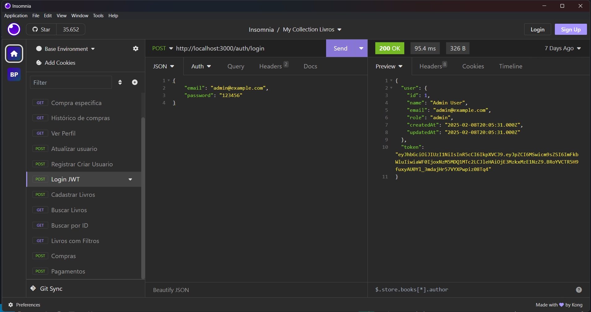

Portfólio de Projetos
Next.js-Blog
IA Insights - Blog sobre Inteligência Artificial
Sobre o Projeto
IA Insights é um blog moderno desenvolvido com Next.js, focado em compartilhar conhecimento sobre Inteligência Artificial. O projeto apresenta um design elegante com animações suaves e uma experiência de usuário intuitiva.
Características Principais
- Design moderno com tema de IA
- Animações suaves e interativas
- Suporte a posts em Markdown
- Layout responsivo
- Renderização do lado do servidor (SSR)
- Geração estática incremental (ISR)
- Roteamento dinâmico
- Tipagem estática com TypeScript
Tecnologias Utilizadas
Core
- Next.js (14.1.0)
- React (18.2.0)
- TypeScript (5.0.4)
Estilização
- Tailwind CSS (3.3.2)
- PostCSS (8.4.23)
- Autoprefixer (10.4.14)
Processamento de Conteúdo
- gray-matter (4.0.3)
- marked (5.0.2)
- date-fns (2.30.0)
 Ver no GitHub
Ver no GitHub
Todo-List React
Dashboard de Tarefas (Todo List)
Sobre o Projeto
Um dashboard moderno e interativo para gerenciamento de tarefas, construído com React.js e Styled Components.

Funcionalidades
- ✨ Interface moderna e responsiva
- üìä Dashboard com estat√≠sticas em tempo real
- üìÖ Gerenciamento de tarefas com data e hora
- üîç Filtros temporais (Hoje, Semana, M√™s)
- üìà Visualiza√ß√£o de progresso com gráficos
- üíæ Persist√™ncia local de dados
- üéØ Acompanhamento de tarefas conclu√≠das e pendentes
- ⏰ Monitoramento de tarefas atrasadas
Tecnologias Utilizadas
Core
- React.js ^18.2.0
- Vite ^5.0.8
- Styled Components ^6.0.7
Dev Dependencies
- @types/react ^18.2.43
- @types/react-dom ^18.2.17
- @vitejs/plugin-react ^4.2.1
Features do Dashboard
- Estatísticas em tempo real
- Gerenciamento de estado com React Hooks
- Design responsivo e animações suaves
- Persistência com LocalStorage
Estrutura do Projeto
O projeto segue uma arquitetura organizada com componentes reutilizáveis, gerenciamento de estado eficiente e estilização modular usando Styled Components.
Delivery-HTML-CSS-JS
Sistema de Delivery - Fast Food üçî
Sobre o Projeto
Um sistema de delivery interativo para fast food, desenvolvido com tecnologias web modernas e design responsivo.
Funcionalidades
- Catálogo de Produtos
- Exibição de produtos com imagens, nomes e preços
- Layout responsivo em grid
- Adaptação para diferentes tamanhos de tela
- Carrinho de Compras
- Contador de itens
- Cálculo automático do valor total
- Controle de quantidade por produto
- Persistência dos dados do carrinho
- Interface Interativa
- Barra de pesquisa
- Filtros de produtos
- Sistema de promoções e cupons
- Programa de fidelidade
- Opção de pagamento online
Tecnologias Utilizadas
Core
- HTML5
- CSS3
- JavaScript (ES6+)
Recursos
- Font Awesome (para ícones)
- LocalStorage (persistência)
- Design Responsivo
Design
- Interface moderna e intuitiva
- Cores contrastantes
- Animações suaves
- Layout responsivo
Responsividade
O projeto se adapta a diferentes tamanhos de tela:
- Desktop: Layout completo
- Tablet: 3 colunas de produtos
- Mobile: 1-2 colunas de produtos
API-RESTFULL-Livros-Node.js
API de Livraria - Sistema de Gerenciamento de Livros
Sobre o Projeto
Uma API RESTful completa para gerenciamento de livraria, desenvolvida com Node.js e MySQL.
Funcionalidades Principais
- Autenticação
- Registro de usuários
- Login com JWT
- Proteção de rotas
- Gerenciamento de Usuários
- Perfis de admin e client
- CRUD completo
- Validação de permissões
- Gestão de Livros
- Cadastro e atualização de livros
- Busca com filtros
- Controle de estoque
- Sistema de Compras
- Processamento de pedidos
- Histórico de compras
- Gestão de pagamentos
Tecnologias Utilizadas
Core
- Node.js
- Express
- MySQL
- Sequelize ORM
Segurança
- JWT (JSON Web Token)
- Bcrypt
- CORS
- Dotenv
Banco de Dados
- Modelagem Relacional
- Migrations
- Transactions
- Query Optimization
Estrutura do Banco
Sistema completo com tabelas relacionadas:
- Users (Gestão de usuários)
- Books (Catálogo de livros)
- Purchases (Registro de compras)
- Payments (Processamento de pagamentos)
Segurança Implementada
- Criptografia de senhas com bcrypt
- Autenticação via JWT Token
- Validação de roles (admin/client)
- Proteção contra acesso não autorizado
- Validações de dados em todas as operações
APP-Consultas-FullStack-React
ConsultasApp - Sistema de Agendamento de Consultas Médicas
Sobre o Projeto
Sistema completo para agendamento de consultas médicas, com frontend em React e backend em Node.js.
Estrutura do Projeto
O projeto está dividido em duas partes principais:
- Frontend (consultas/)
- Interface em React
- Design com Material-UI
- Gerenciamento de formulários com Formik
- Backend (backend/)
- API em Node.js
- Banco de dados MySQL
- Autenticação JWT
Funcionalidades
Para Pacientes
- Cadastro e login
- Busca de médicos por especialidade
- Agendamento de consultas
- Visualização de histórico médico
- Avaliação de consultas
Para Médicos
- Gerenciamento de agenda
- Confirmação de consultas
- Visualização de histórico de pacientes
- Perfil profissional com avaliações
Tecnologias Utilizadas
Frontend
- React
- Material-UI
- React Router
- Formik
- Axios
- JWT Decode
Backend
- Node.js
- Express
- MySQL
- JWT
- Bcrypt
Segurança
- Autenticação JWT
- Senhas criptografadas
- Proteção de rotas
- Validação de dados
Como Executar
O projeto pode ser executado localmente seguindo estes passos:
- Frontend: npm run dev (porta 3000)
- Backend: npm run dev (porta 3001)